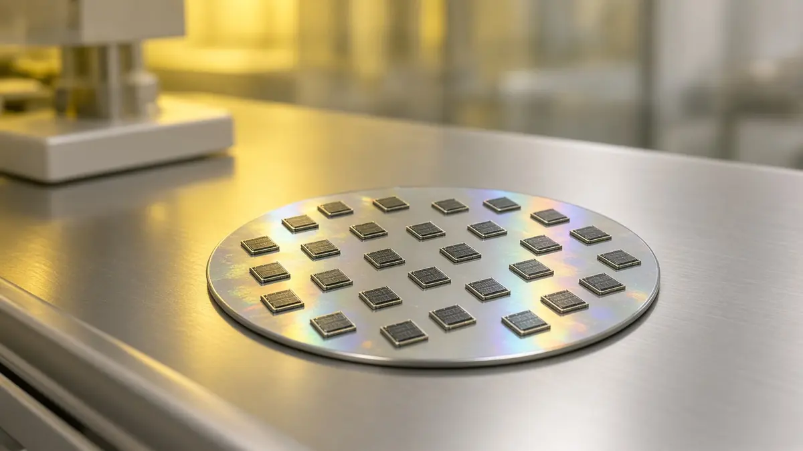

Qilimanjaro raises €19.6 million Series A first close led by Indra Group
Short answer: Qilimanjaro Quantum Tech, a Barcelona quantum computing company, announced on 14 October 2026 a €19.6 million first close of its Series A round. Indra Group led with €10 million through IndraMind, and Spain's public technology investor SETT added €9.6 million, according to the company.
Qilimanjaro says it expects to complete the round in the fourth quarter of 2026 with Avançsa and other existing investors. It says the money will go towards scaling and industrialising its quantum computers, developing new generations of chips and expanding manufacturing and deployment capacity.

Founded in 2019, Qilimanjaro describes itself as Spain's only full-stack quantum computing company. It builds digital and analog processors based on superconducting fluxonium qubits and combines them with classical high-performance computing in what it calls multimodal systems for optimisation, simulation and AI problems.
Indra Group framed the investment as a way to speed up the application of quantum technology in physics and robotics. SETT is part of Spain's Ministry for Digital Transformation and Public Administration, according to the Qilimanjaro announcement.